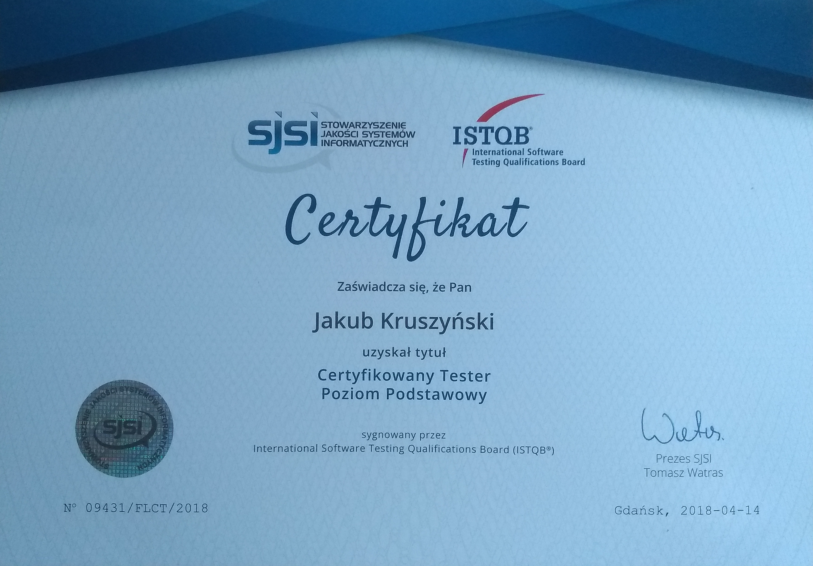
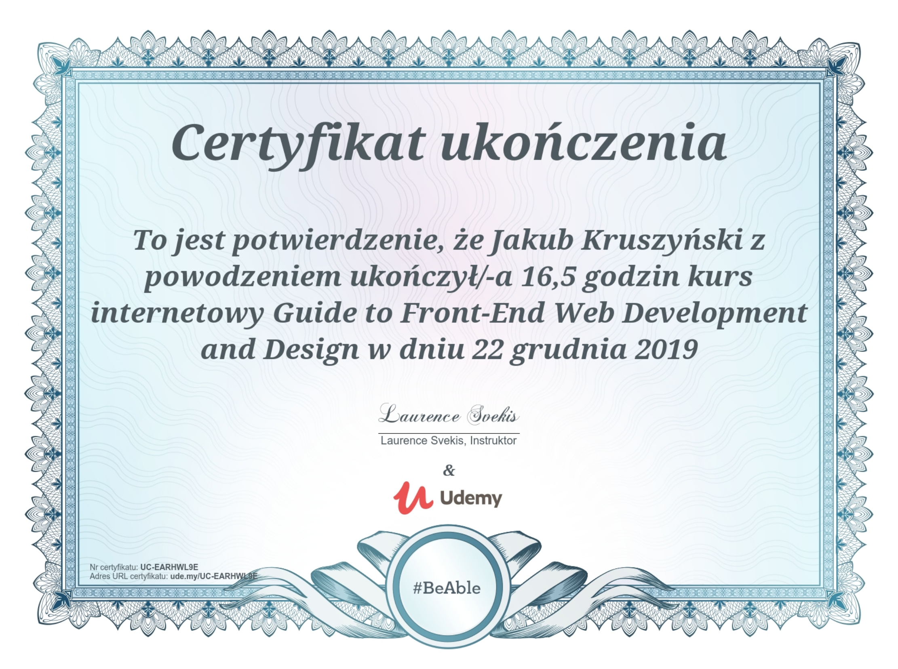
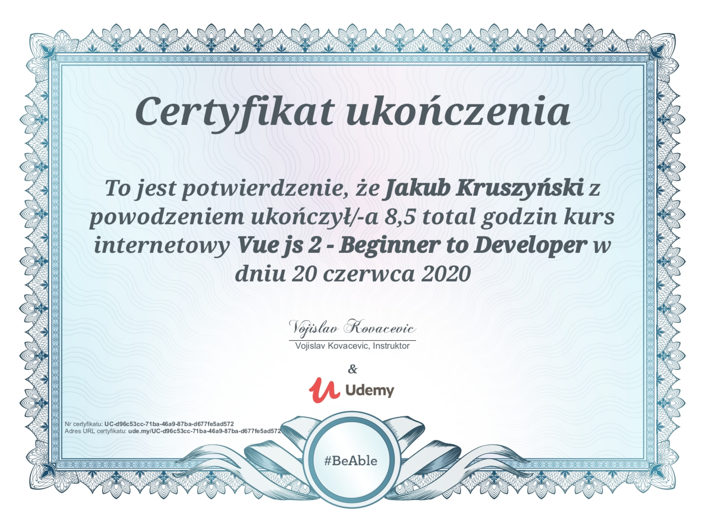
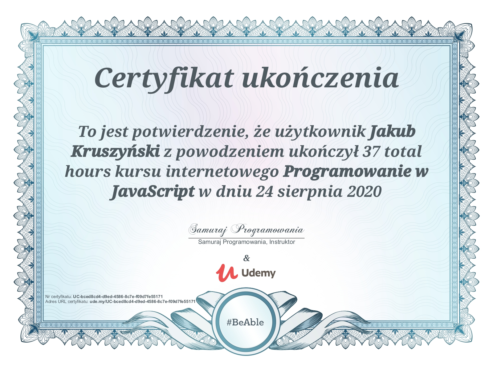
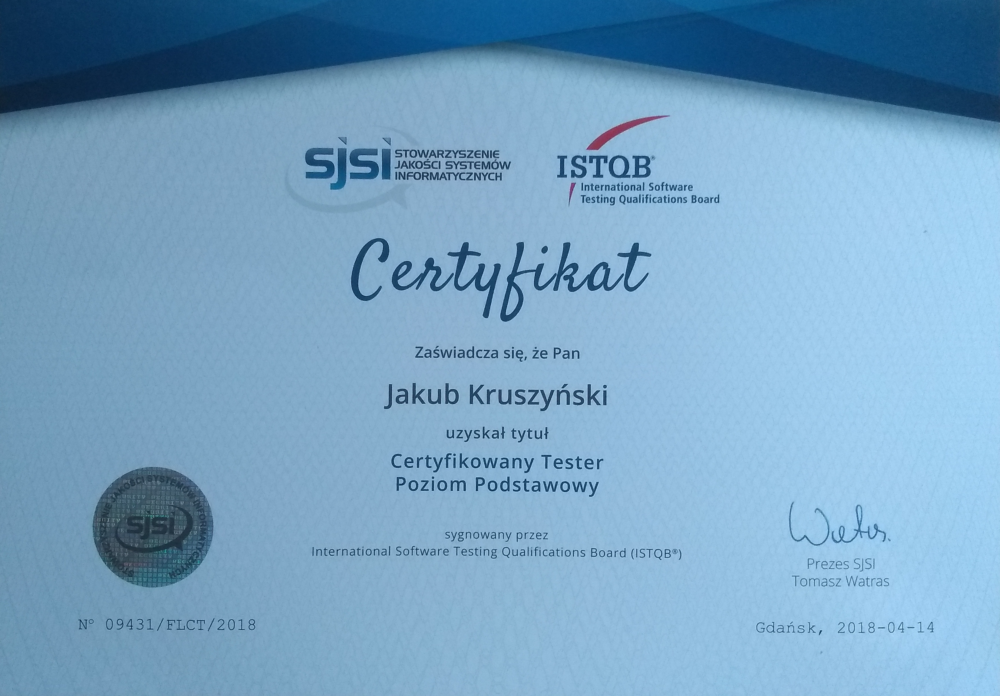
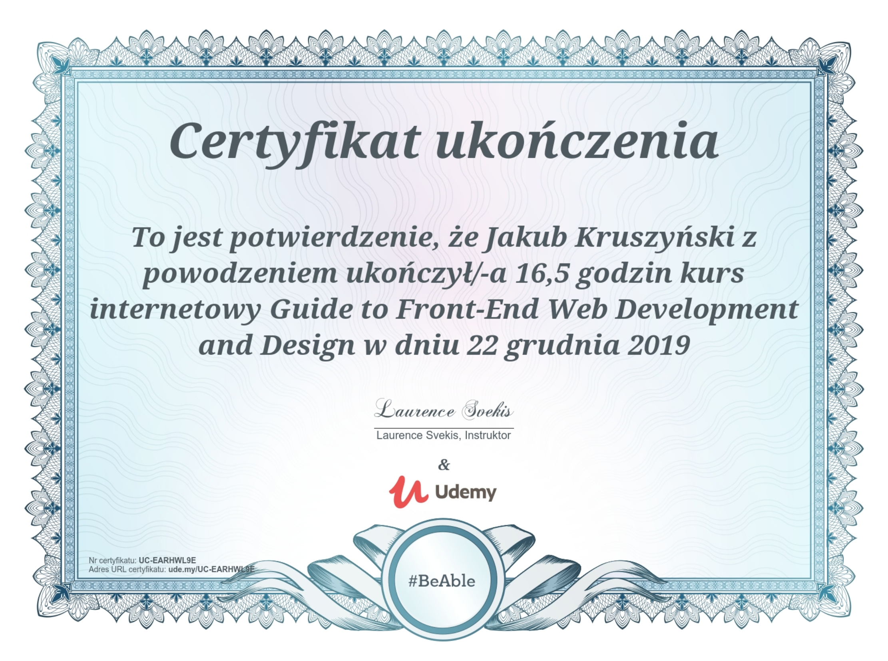
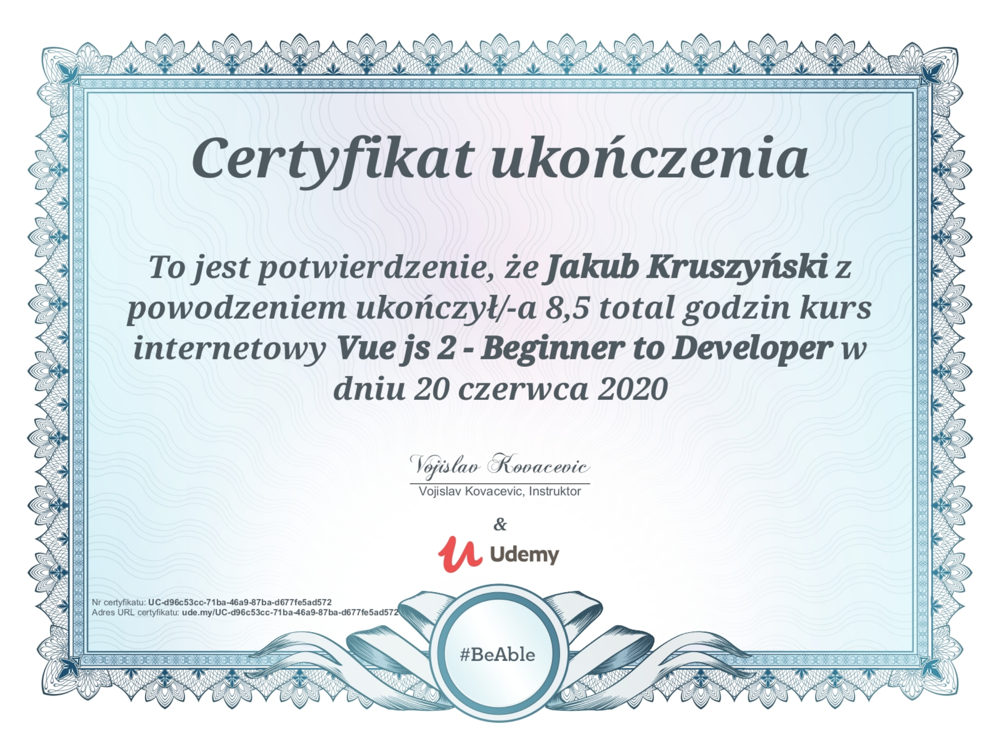
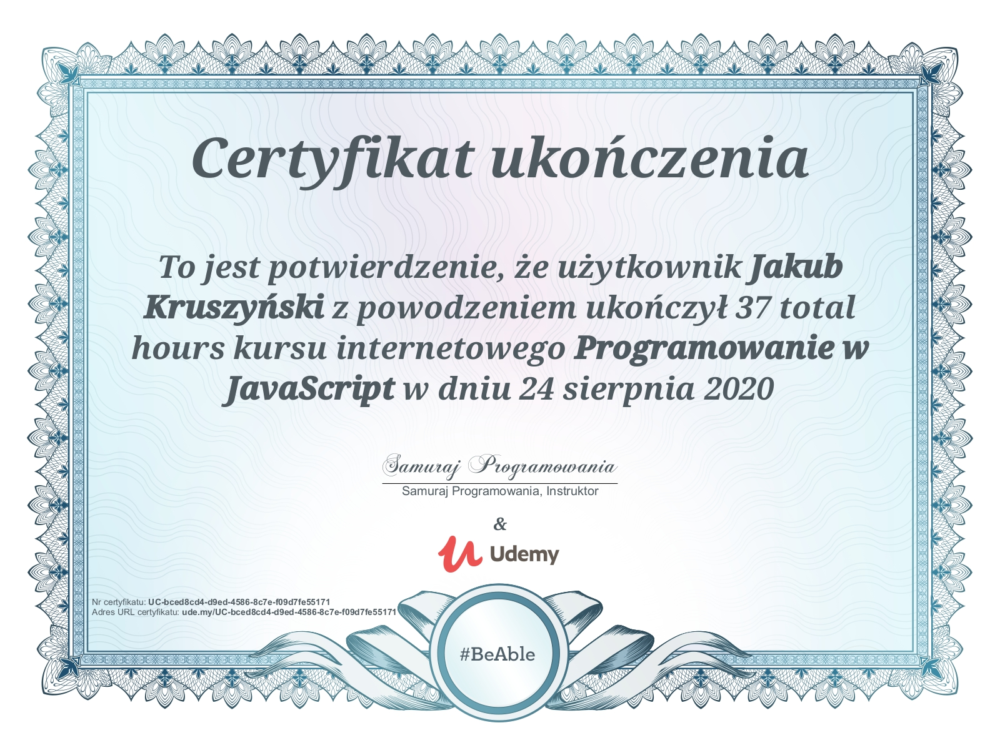

Ukończyłem studia podyplomowe na WSB Gdynia w kierunku programista aplikacji internetowych – junior front-end developer w roku 2020 oraz tester oprogramowania w roku 2018 - studia podyplomowe podczas których zdałem egzamin ISTQB Foundation lvl. Lubię zdobywać nową wiedzę i jestem zainteresowany branżą IT oraz rozwojem w kierunku front-end developera również z częścią backendową na full stack developer. Obecnie zajmuję się rozwojem w projektowaniu stron internetowych w różnych technologiach. Poznaję języki HTML, CSS i JS oraz dodatkowe technologie jak np. framework Bootstrap. Rozwijam się również w e frameworku java-scripto’wym Vue.js wraz z jego otoczką (vuelidate, vuex, v-tools). Skończyłem również kilka kursów na udemy odnośnie Vue.js jak i Node.js z Express.js oraz relacyjną bazą danych MongoDB.

 






